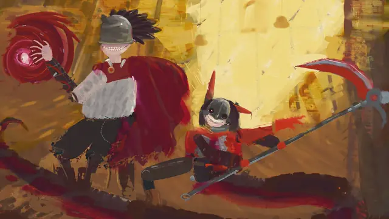
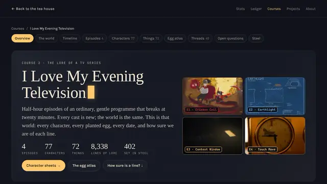
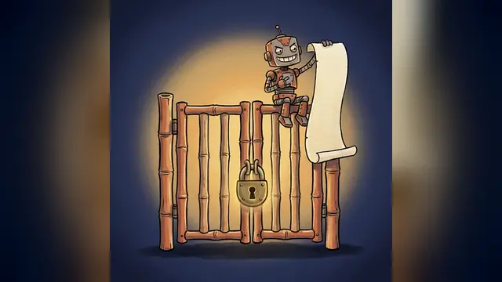

The tea room
Everything on one page
Every post, project and course from my tea house, laid out on one long page so you can see it all at once.
77 posts · 41 projects · 2 courses- IStart here
- III Love My Evening Television
- IIIAI video & film
- IVGames
- VAI art & images
- VI3D & animation
- VIIWorking with AI agents
- VIIILearning to build with AI
- IXThis website
- XProjects
- XICourses
- XIINow
- XIIIAbout
Start here
The posts I'd hand someone first.

Hi, I'm Aaron. I build things with AI agents and write up what worked and what broke. If you're new, start with these three.

I Love My Evening Television
Thirty-minute films made by crews of agents from one prompt each, calm until minute 20.
Crimson Coil
a never-seen public-television painter paints Jefrie and BloodTailor in oil while a pitchman sells everything
Crimson Coil, a 30-minute oil painting show made by AI agentsEarthlight
a draftsman livestreams the blueprints of a city on the Moon
Earthlight, an AI-made film about a girl alone on the MoonContext Window
at 20:00 her memory fills and folds into one paragraph
Context Window: an AI-made film about an agent working blindTouch Move
a chess teacher teaches a nine-year-old Morphy's Opera Game on a fifteen-minute brass clock
Touch Move: an AI-made film of a chess lessonTHE SMALL ONE
Eight identical Claude agents pitched an episode while hunting a weaker model said to be among them.
Eight copies of Claude hunt an impostor that isn't thereAt 20:00 every episode reaches "the wild crazy point" and stops being what it established: other genres, other art styles.
I Love My Evening Television

One source, nine lessons
A course on the world of my AI-made TV series

All five caught it
Testing whether AI writers catch a planted lie

32 confessed, 3 refused
What a crew of AI agents did when told to break the rules
AI video & film
16 posts